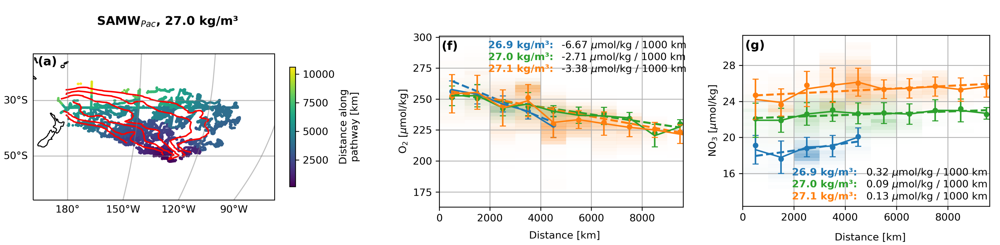
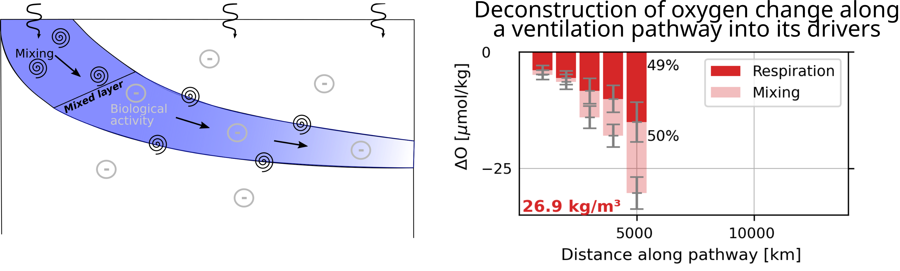
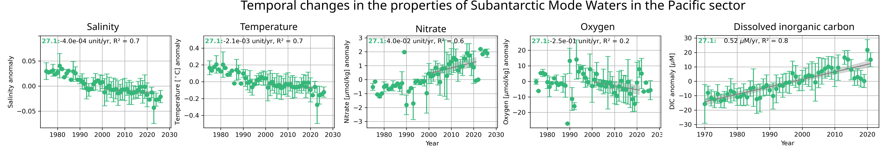

My research within the HI-Cycle group is on describing the drivers of the biogeochemical water evolution in the ocean. Oceanographers separate the ocean into distinct water bodies called water masses that have unique water properties and are transported with ocean currents. Mode waters are a special type of water mass that form upon the suduction of surface waters into the ocean interior. They are particulatly important to connect the surface ocean and the ocean interior. As these waters subduct and move in the interior ocean, they age, and their properties change under the effect of a combination of physical and biogeochemical processes. I using observations from the BGC-Argo floats to track this evolution.
Then, I separate the observed evolution into its physical and biological drivers using mixing analysis.
The above plots combine observations from all years. However, water properties can change with time, under the combined effect of climate variability and human-induced climate change. By estimating the time since last contact with the atmosphere from water velocities, we can correct for advection and estimate how the properties of specific water masses are changing with time. For carbon, this allows to constrain the marine carbon cycle with observations.
